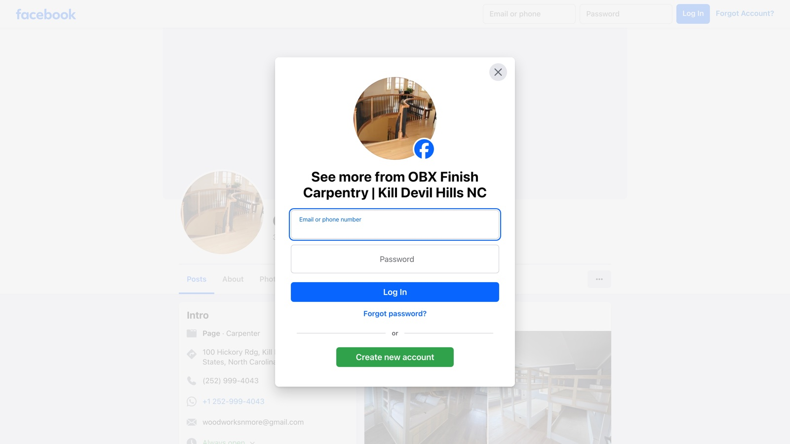

How we took an Outer Banks finish carpenter from a login-walled Facebook page to a real website, found on Google and landing a new paying client within two days of launch.
OBX Home Solutions is John Espinoza's finish-carpentry shop on the Outer Banks · crown molding, staircases, built-ins, whole-room remodels. Thirty-plus years of craft and more than four hundred projects behind him.
Online, almost none of it existed. His entire web presence was a single Facebook page · OBX Finish Carpentry · and even that sat behind a login wall. No website. No Google footprint. Nothing a homeowner searching "finish carpenter, Outer Banks" would ever find.
The work was extraordinary. The way customers found it was a dead end.

Thirty years of craft and 400+ projects, and the only way to see any of it was to log into Facebook. No website, no Google presence, nothing a homeowner could actually find.
A full website · services, gallery, service area, testimonials · built to be found on Google and to win the job.
John came to us on the Growth package. In three days we built a complete, custom multi-page site · Services, Gallery, Service Area, About, Testimonials, FAQ, and Contact · with his own project photography doing the talking on every page.
Then we did the part that actually moves a local business: advanced, location-targeted SEO. Structured data, a real service-area strategy, fast Core-Web-Vitals performance, and on-page work built around how Outer Banks homeowners actually search.
Delivered in three days. 10% deposit, the rest on launch. He owns every bit of it.


Within days, the site was live, indexed, and ranking #1 on Google for OBX Home Solutions · the first time the business had ever been findable on search at all. From a login-walled Facebook page to owning his name on Google.
But the result that mattered most came even sooner: within two days of going live, the new site landed John a brand-new client. Not a lead, not a maybe · a real, paying job, from a website that hadn't existed the week before.
That's the whole point of building it right. A business nobody can find is invisible. A site that's findable · and converts · is a salesperson working around the clock. Two days in, John's was already closing.